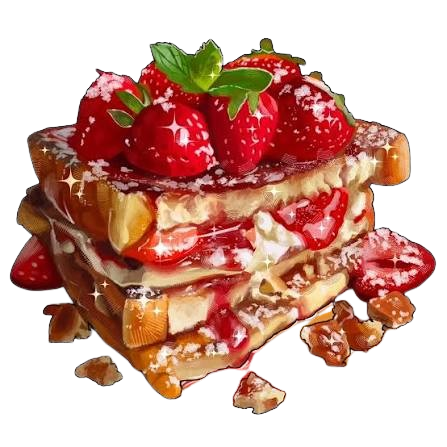
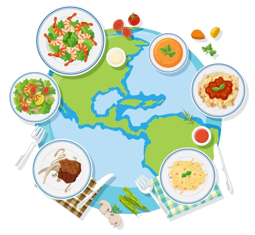
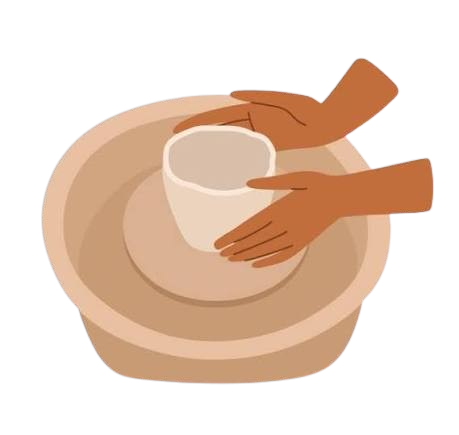
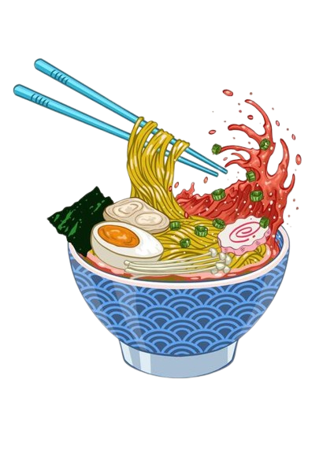

waking up well rested is the first step to a perfect day! after that, i would have a huge plate of waffles topped in fruits, chocolate, and whipped cream for breakfast!
after savouring my food, my friends and i head out to the beach!!
we splash around in the water, read books in the sun, and have an amazing time :p

for lunch, i head out and find a new place to eat! i lovee trying new foods and cusines, so i go somewhere and try something new and interesting!
althouhg I am a slightly picky eater, i always look forward to trying food and finding new things that I love! especially if the restaurant has a nice aesthetic or some cute animals!!
during the afternoon, my sister and I head out to wander the city! we go shopping in the amazing weather, and come across a free ice cream stand!
we continue roaming and find a cool activity to partake in :D for example, we go to activate to run around or to a pottery class to make some cute things!


for dinner, i would eat a biiggg bowl of ramen with a bunch of toppings, and end it off with some tiramisu for dessert!
right after dinner, i gather some more friends and we go on a sunset hike, ending up at a beautiful lookout point to watch the sunset!